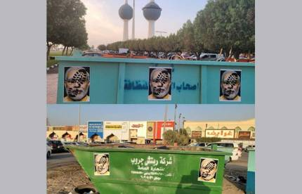

মহানবী (স.) কে কটূক্তি : মধ্যপ্রাচ্যের একতার তাপে পুড়ছে ভারত
অনলাইন ডেস্ক । ৭ জুন, ২০২২, ১:৪২ পিএম

এক টিভি সাক্ষাৎকারে মহানবী হযরত মোহাম্মদ (স.) কে নিয়ে বিতর্কিত মন্তব্য করেন ভারতের ক্ষমতাসীন দল ভারতীয় জনতা পার্টির (বিজেপি) মুখপাত্র নুপুর শর্মা। এই ঘটনায় শুরুতে বিজেপি কোনো ব্যবস্থা নেয়নি। বরং মুসলিমরা বিক্ষোভ করলে পুলিশ তাদের দমন করে। তবে মধ্যপ্রাচ্যের দেশগুলোর কঠোর বার্তা দেয়ার পর নিজেদের চেহারা পুরোটাই পাল্টে ফেলেছে বিজেপি। দল থেকে বরখাস্ত করা হয়েছে তাকে।
বিবৃতি দিয়ে নিজেদের পক্ষে সাফাই গেয়েছে ভারত সরকারও। ঘটনা গত মাসে ঘটলেও এ বিষয়ে এতদিন চুপ ছিল বিজেপি। এমনকি উত্তর প্রদেশের কানপুরে মুসলিমরা বিক্ষোভ দেখালে পুলিশ তাদের দমন করে। গণহারে গ্রেফতার করে। স্থানীয় পুলিশ প্রধান মুসলিমদের বিশৃঙ্খলাকারী আখ্যা দিয়ে তাদের বাড়িঘর ভেঙে দেয়ার হুমকি দেন। নুপুর শর্মার বিরুদ্ধে কোনো ব্যবস্থা না নিয়ে বরং স্থানীয় সংখ্যালঘু...
Click Here More....
মুসলিমদের ওপরই ব্যবস্থা নেয়া হয়। অনেক বিজেপি নেতাই নুপুর শর্মার পক্ষ নেন। তবে দৃশ্যপট এখন একেবারেই পাল্টে গেছে।
নুপুর শর্মাকে ভারতের প্রধানমন্ত্রী নরেন্দ্র মোদির অন্যতম সহকারী উল্লেখ করে এমন মন্তব্যের জন্য কঠোর বার্তা দিয়েছে সৌদি আরব, কাতার, কুয়েত, সংযুক্ত আরব আমিরাত, ইরানসহ বেশিরভাগ মুসলিম দেশ। এসব দেশ তাদের দেশের ভারতীয় রাষ্ট্রদূতকে তলব করে এই ঘটনার তীব্র নিন্দা জানায় এবং ক্ষমা চাওয়ার আবেদন করে। এছাড়া ভারতের পররাষ্ট্রমন্ত্রণালয়েও ক্ষমা চাওয়ার দাবি জানিয়ে চিঠি পাঠাই এসব দেশ।
মধ্যপ্রাচ্যের দেশগুলোর একত্রিত হয়ে এমন কঠোর বার্তায় নড়েচড়ে বসে মোদি সরকার ও বিজেপি। গত মাসে মন্তব্য করলেও রোববার নুপুর শর্মাকে বরখাস্ত করে ও তার সমর্থনে টুইট করা নভিন জিন্দালকে দল থেকে বহিষ্কার করে ভারতের ক্ষমতাসীন দল।
কাতারের ভারতীয় রাষ্ট্রদূতকে তলব করে দেশটির সরকার। কাতারে অবস্থিত ভারতীয় দূতাবাসে একটি কড়া চিঠিও পাঠানো হয়। যেখানে ভারতকে প্রকাশ্যে ক্ষমা চাইতেও বলা হয়েছে। কুয়েতও এই বিতর্কিত বক্তব্যের জন্য ক্ষমা চাওয়ার দাবি জানিয়েছে। তারা জানিয়েছে এমন পরিস্থিতি ও মন্তব্য ঘৃণা ও চরমপন্থা বৃদ্ধি করবে।
নিউজ চ্যানেল ইরান ইন্টারন্যাশনাল ইংলিশ জানিয়েছে, যে ইরানের পররাষ্ট্র মন্ত্রণালয় তেহরানে ভারতীয় রাষ্ট্রদূতকে তলব করেছে। তারা জানিয়েছে রাষ্ট্রীয় টিভি শোতে ইসলামের নবীর অবমাননা করা হয়েছে।
সৌদি আরব রোববার বিজেপি নেত্রীর নবী মুহাম্মদ (স.) কে অবমাননা করে দেওয়া বিবৃতির নিন্দা করেছে। দেশটির পররাষ্ট্রমন্ত্রণালয়, মুখপাত্রকে বরখাস্ত করার বিজেপির সিদ্ধান্তকে স্বাগত জানিয়েছে। এছাড়া বিশ্বাস ও ধর্মের সম্মানের আহ্বান জানিয়ে সৌদি আরবের অবস্থান পুনর্ব্যক্ত করা হয়েছে।
এমন অবস্থার পর বিবৃতিতে বিজেপি জানায়, সব ধর্মকে সম্মান করে বিজেপি। ভারতের ইতিহাসে সবসময়ে সব ধর্ম একসঙ্গে বিকশিত হয়েছে। কোনো ধর্ম বা ধর্মীয় ব্যক্তির প্রতি অসম্মানজনক মন্তব্য করার তীব্র নিন্দা করছে দল। এই ধরনের কার্যকলাপকে প্রশ্রয় দেয় না বিজেপি।
সরকারিভাবে মধ্যপ্রাচ্যের দেশগুলো কঠোর বার্তা দিলেও বসে নেই সাধারণ মুসলিমরাও। সামাজিক মাধ্যমে ভারতকে বয়কটের ডাক দিয়েছে তারা। এরই মধ্যে কুয়েতের দোকানগুলো থেকে সরিয়ে ফেলা হয়েছে ভারতীয় পণ্য। টুইটারে ট্রেন্ডিংয়ে ওপরের দিকে রয়েছে #বয়কটভারত।
আনন্দবাজারের খবরে বলা হয়েছে, বিজেপি নেতৃত্ব ঘরোয়াভাবে স্বীকার করেছেন একের পর এক মুসলিম দেশ নূপুরের মন্তব্য নিয়ে সরব হওয়ায় রীতিমতো অস্বস্তিতে সরকার। কারণ, দল জানে দেশের বৃহত্তর মুসলিম সমাজের কাছে এখনও অচ্ছুৎ বিজেপি।
সেখানে বলা হয়েছে, বিজেপি নেতৃত্ব ভেবেছিলেন, মুখপাত্রদের শাস্তি দিলেই বিতর্ক থেমে যাবে। কিন্তু ওই মন্তব্যের জেরে আন্তর্জাতিক স্তরে পরিস্থিতি যে এভাবে ঘোলাটে হয়ে উঠবে তা ছিল তাদের কল্পনার অতীত। বিজেপি চাইছে, সময়ই ক্ষতে প্রলেপ দিক।
কংগ্রেসের অভিযোগ, এই ঘটনা নতুন নয়। দীর্ঘ দিন ধরেই বিজেপি সমাজে ঘৃণার বীজ বপন করছে। যার ফল এখন পাওয়া যাচ্ছে। কংগ্রেস মুখপাত্র রণদীপ সুরজেওয়ালার কথায়, ‘বিজেপি এত দিন মন্দির-মসজিদ করেছে। শ্মশান-কবরস্থান, ৮০-২০ করেছে। তখন বারণ করা হয়নি। এখন ধামাচাপা দেওয়ার জন্য মুখপাত্রদের বলি দিয়ে দলের শীর্ষ নেতৃত্ব দায় ঝাড়ছেন।’
পরিস্থিতি বেশ ঘোলাটে হলেও এখনো এ বিষয়ে কোনো মন্তব্য করেননি ভারতের প্রধানমন্ত্রী নরেন্দ্র মোদিসহ বিজেপি ও ভারত সরকারের শীর্ষ কোনো ব্যক্তি। নীরব থেকে পরিস্থিতি পরখ করতে চাইছেন তারা।
ধর্মীয় বিভাজনের অভিযোগ থাকা বিজেপি মধ্যপ্রাচ্যের একতার তাপ কিছুটা হলেও টের পাচ্ছে। আগামীতে মুসলিম ও ইসলামের বিষয়ে কথা বলতে সতর্ক না হলে হয়তো আরও ভুগতে হবে ভারতকে।
"